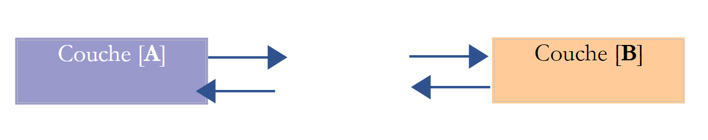
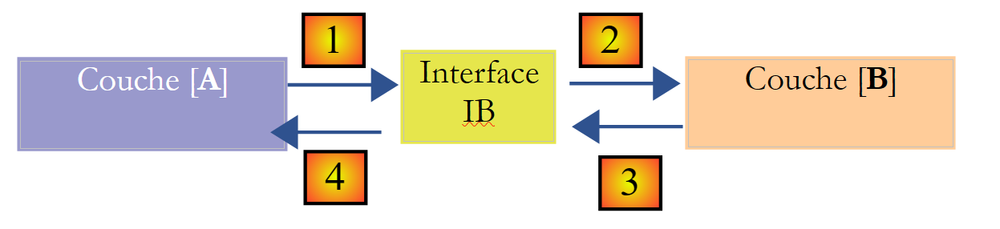
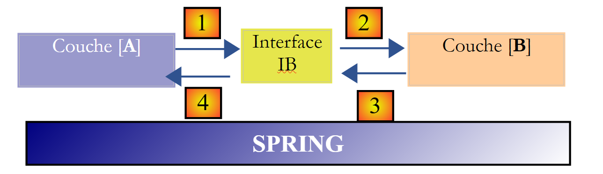
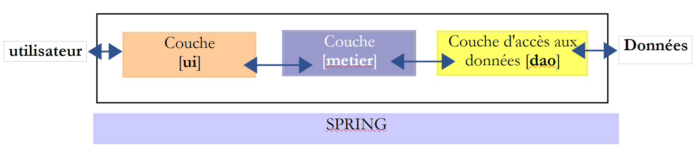
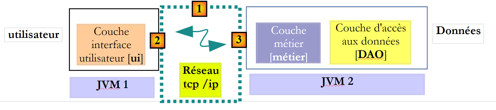
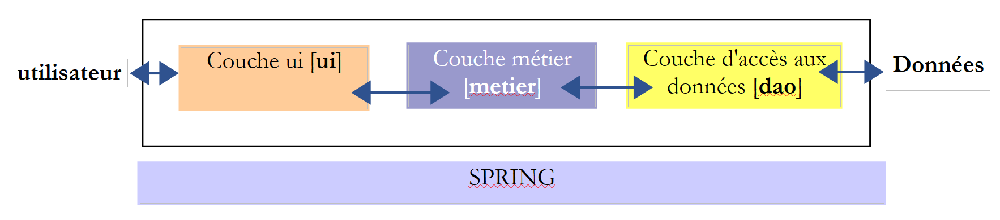

4. [TD] : Architectures en couches
Mots clés : architecture multicouche, Spring, injection de dépendances.
4.1. Introduction
Rappelons ce qui a été fait :
- dans la partie 1 de l'exercice ELECTIONS aucune classe n'a été utilisée. On a construit une solution comme on l'aurait construite en langage C.
- dans la partie 2 de l'exercice, deux classes ont été introduites :
- [ListeElectorale] qui représente les attributs (id, nom, voix, sièges, élimine) d'une liste candidate
- [ElectionsException] une classe d'exceptions non contrôlées. Ce type d'exception est utilisé à chaque fois que se produit une erreur fatale dans l'application des élections. Elle est non contrôlée, c.a.d. que le développeur n'est pas obligé de la gérer avec un try-catch. Le calcul du résultat des élections a été confié jusqu'à maintenant à une méthode [main] d'une classe [MainElections]
La solution précédente inclut trois phases classiques :
- l'acquisition des données, lignes 17-18
- le calcul de la solution, lignes 19-20
- l'affichage et / ou la persistance des résultats, lignes 21-22 Seule la phase 2 est vraiment constante. La phase 1 peut varier : les données peuvent venir du clavier comme dans les exemples étudiés, d'un fichier texte, d'une interface graphique, d'une base de données, du réseau, ... De même il y a de multiples façons de restituer les résultats dans la phase 3 : les afficher à l'écran comme cela a été fait dans les exemples étudiés, les enregistrer dans un fichier, dans une base de données, les envoyer sur le réseau, ...
De façon plus générale, une application peut souvent être modélisée en trois couches ayant chacune un rôle bien défini :
 |
On appelle également cette architecture, "architecture trois tiers", traduction de l'anglais "three tier architecture". Le terme "trois tiers" désigne normalement une architecture où chaque tier est sur une machine différente. Lorsque les tiers sont sur une même machine, l'architecture devient une architecture "trois couches".
- la couche [metier] est celle qui contient les règles métier de l'application. Pour notre application d'élections, ce sont les règles qui permettent de calculer les sièges obtenus par les différentes listes, une fois que l'on connaît les voix obtenues par chacune d'elles. Cette couche a besoin de données pour travailler. Par exemple dans l'application d'élections :
- les listes avec pour chacune son nom et son nombre de voix
- le nombre de sièges à pourvoir
-
le seuil électoral au-dessous duquel, une liste est éliminée Dans le schéma ci-dessus, les données peuvent provenir de deux endroits :
-
la couche d'accès aux données ou [dao] (DAO = Data Access Object) pour les données déjà enregistrées dans des fichiers ou bases de données. Ce pourrait être le cas ici du nom des listes, du nombre de sièges à pourvoir, du seuil électoral. On connaît en effet ces informations avant l'élection elle-même.
- la couche d'interface avec l'utilisateur ou [ui] (UI = User Interface) pour les données saisies par l'utilisateur ou affichées à l'utilisateur. Ce pourrait être le cas ici des voix des listes qui ne sont connues qu'au dernier moment ainsi que de l'affichage des résultats de l'élection.
- de façon générale, la couche [dao] s'occupe de l'accès aux données persistantes (fichiers, bases de données) ou non persistantes (réseau, capteurs, ...).
- la couche [ui] elle, s'occupe des interactions avec l'utilisateur s'il y en a un.
- les trois couches sont rendues indépendantes grâce à l'utilisation d'interfaces Java.
- pour intégrer ces couches ensemble dans l'application, il existe différentes méthodes. Nous serons amenés à utiliser un outil appelé " Spring ". Sur le schéma, il est transversal aux autres couches. Nous allons reprendre l'application [Elections] développée précédemment pour lui donner une architecture 3 couches. Pour cela, nous allons étudier les couches [ui, metier, dao] les unes après les autres, en commençant par la couche [dao], couche qui s'occupe des données persistantes.
Auparavant, il nous faut définir les interfaces des différentes couches de l'application [Elections].
4.2. Les interfaces de l'application [Elections]
Rappelons qu'une interface définit un ensemble de signatures de méthodes. Les classes implémentant l'interface donnent un contenu à ces méthodes.
Revenons à l'architecture 3 couches de notre application :
|
Dans ce type d'architecture, c'est souvent l'utilisateur qui prend les initiatives. Il fait une demande en [1] et reçoit une réponse en [8]. On appelle cela le cycle demande - réponse. Prenons l'exemple du calcul des sièges obtenus au soir des élections. Celui-ci va nécessiter plusieurs étapes :
- la couche [ui] va devoir demander à l'utilisateur le nombre de voix obtenues par chacune des listes. Pour cela elle va devoir présenter à celui-ci le nom des listes en compétition. L'utilisateur n'aura alors qu'à mettre le nombre de voix en face de chaque liste puis à demander le calcul des sièges.
- la couche [ui] ne dispose pas du nom des listes. Celles-ci sont enregistrées dans la source de données à droite du schéma. Elle va utiliser le chemin [2, 3, 4, 5, 6, 7] pour les obtenir. L'opération [2] est la demande des listes, l'opération [7] la réponse à cette demande. Ceci fait, elle peut les présenter à l'utilisateur par [8].
- l'utilisateur va transmettre à la couche [ui] le nombre de voix obtenues par chacune des listes. C'est l'opération [1] ci-dessus. Au cours de cette étape, l'utilisateur n'interagit qu'avec la couche [ui]. C'est celle-ci qui va notamment vérifier la validité des données saisies. Ceci fait, l'utilisateur va demander la liste des sièges obtenus par chacune des listes.
- la couche [ui] va demander à la couche métier de faire le calcul des sièges. Pour cela elle va lui transmettre les données qu'elle a reçues de l'utilisateur. C'est l'opération [2].
- la couche [metier] a besoin de certaines informations pour mener à bien son travail. Elle a déjà les listes depuis l'opération (b). Il lui faut également le nombre de sièges à pourvoir ainsi que la valeur du seuil électoral. Elle va demander ces informations à la couche [dao] avec le chemin [3, 4, 5, 6]. [3] est la demande initiale et [6] la réponse à cette demande.
- ayant toutes les données dont elle avait besoin, la couche [metier] calcule les sièges obtenus par chacune des listes.
- la couche [metier] peut maintenant répondre à la demande de la couche [ui] faite en (d). C'est le chemin [7].
- la couche [ui] va mettre en forme ces résultats pour les présenter à l'utilisateur sous une forme appropriée puis les présenter. C'est le chemin [8].
- on peut imaginer que ces résultats doivent être mémorisés dans un fichier ou une base de données. Cela peut être fait de façon automatique. Dans ce cas, après l'opération (f), la couche [metier] va demander à la couche [dao] d'enregistrer les résultats. Ce sera le chemin [3, 4, 5, 6]. Cela peut être fait également seulement sur demande de l'utilisateur. Ce sera le chemin [1-8] qui sera utilisé par le cycle demande - réponse. On voit dans cette description qu'une couche est amenée à utiliser les ressources de la couche qui est à sa droite, jamais de celle qui est à sa gauche. Considérons deux couches contigües :
|  |
La couche [A] fait des demandes à la couche [B]. Dans les cas les plus simples, une couche est implémentée par une unique classe. Une application évolue au cours du temps. Ainsi la couche [B] peut avoir des classes d'implémentation différentes [B1, B2, ...]. Si la couche [B] est la couche [dao], celle-ci peut avoir une première implémentation [B1] qui va chercher des données dans un fichier. Quelques années plus tard, on peut vouloir mettre les données dans une base de données. On va alors construire une seconde classe d'implémentation [B2]. Si dans l'application initiale, la couche [A] travaillait directement avec la classe [B1] on est obligés de réécrire partiellement le code de la couche [A]. Supposons par exemple qu'on ait écrit dans la couche [A] quelque chose comme suit :
- ligne 1 : une instance de la classe [B1] est créée
- ligne 3 : des données sont demandées à cette instance Si on suppose, que la nouvelle classe d'implémentation [B2] utilise des méthodes de même signature que celle de la classe [B1], il faudra changer tous les [B1] en [B2]. Ca, c'est le cas très favorable et assez improbable si on n'a pas prêté attention à ces signatures de méthodes. Dans la pratique, il est fréquent que les classes [B1] et [B2] n'aient pas les mêmes signatures de méthodes et que donc une bonne partie de la couche [A] doive être totalement réécrite.
On peut améliorer les choses si on met une interface entre les couches [A] et [B]. Cela signifie qu'on fige dans une interface les signatures des méthodes présentées par la couche [B] à la couche [A]. Le schéma précédent devient alors le suivant :
|  |
La couche [A] ne s'adresse désormais plus directement à la couche [B] mais à son interface [IB]. Ainsi dans le code de la couche [A], la classe d'implémentation [Bi] de la couche [B] n'apparaît qu'une fois, au moment de l'implémentation de l'interface [IB]. Ceci fait, c'est l'interface [IB] et non sa classe d'implémentation qui est utilisée dans le code. Le code précédent devient celui-ci :
- ligne 1 : une instance [ib] implémentant l'interface [IB] est créée par instanciation de la classe [B1]
- ligne 3 : des données sont demandées à l'instance [ib] Désormais si on remplace l'implémentation [B1] de la couche [B] par une implémentation [B2], et que ces deux implémentations respectent la même interface [IB], alors seule la ligne 1 de la couche [A] doit être modifiée et aucune autre. C'est un grand avantage qui à lui seul justifie l'usage systématique des interfaces entre deux couches.
On peut aller encore plus loin et rendre la couche [A] totalement indépendante de la couche [B]. Dans le code ci-dessus, la ligne 1 pose problème parce qu'elle référence en dur la classe [B1]. L'idéal serait que la couche [A] puisse disposer d'une implémentation de l'interface [IB] sans avoir à nommer de classe. Ce serait cohérent avec notre schéma ci-dessus. On y voit que la couche [A] s'adresse à l'interface [IB] et on ne voit pas pourquoi elle aurait besoin de connaître le nom de la classe qui implémente cette interface. Ce détail n'est pas utile à la couche [A].
Le framework Spring (http://www.springframework.org) permet d'obtenir ce résultat. L'architecture précédente évolue de la façon suivante :
|  |
La couche transversale [Spring] va permettre à une couche d'obtenir par configuration une référence sur la couche située à sa droite sans avoir à connaître le nom de la classe d'implémentation de la couche. Ce nom sera dans les fichiers de configuration et non pas dans le code Java. Le code Java de la couche [A] prend alors la forme suivante :
- ligne 1 : une instance [ib] implémentant l'interface [IB] de la couche [B]. Cette instance est créée par Spring sur la base d'informations trouvées dans un fichier de configuration. Spring va s'occuper de créer :
- l'instance [b] implémentant la couche [B]
- l'instance [a] implémentant la couche [A]. Cette instance sera initialisée. Le champ [ib] ci-dessus recevra pour valeur la référence [b] de l'objet implémentant la couche [B]
- ligne 3 : des données sont demandées à l'instance [ib] On voit maintenant que, la classe d'implémentation [B1] de la couche B n'apparaît nulle part dans le code de la couche [A]. Lorsque l'implémentation [B1] sera remplacée par une nouvelle implémentation [B2], rien ne changera dans le code de la classe [A]. On changera simplement les fichiers de configuration de Spring pour instancier [B2] au lieu de [B1].
Le couple Spring et interfaces Java apporte une amélioration décisive à la maintenance d'applications en rendant les couches de celles-ci étanches entre elles. C'est cette solution que nous utiliserons pour l'application [Elections].
Revenons à l'architecture trois couches de notre application :
|  |
Dans les cas simples, on peut partir de la couche [metier] pour découvrir les interfaces de l'application. Pour travailler, elle a besoin de données :
- déjà disponibles dans des fichiers, bases de données ou via le réseau. Elles sont fournies par la couche [dao].
-
pas encore disponibles. Elles sont alors fournies par la couche [ui] qui les obtient auprès de l'utilisateur de l'application. Quelle interface doit offrir la couche [dao] à la couche [metier] ? Quelles sont les interactions possibles entre ces deux couches ? La couche [dao] doit fournir les données suivantes à la couche [metier] :
-
le nombre de sièges à pourvoir
- la valeur du seuil électoral au-dessous duquel une liste est éliminée
- les noms des listes Ces informations sont en effet connues avant l'élection et peuvent donc être mémorisées. Dans le sens [metier] -> [dao], la couche [metier] peut demander à la couche [dao] d'enregistrer le résultat des élections, notamment les sièges obtenus par les différentes listes.
Avec ces informations, on pourrait tenter une première définition de l'interface de la couche [dao] :
- ligne 1 : l'interface s'appelle [IElectionsDao]. Elle définit quatre méthodes :
- trois méthodes pour lire des données venant de la source de données : [getSeuilElectoral, getNbSiegesAPourvoir, getListesElectorales]. Ces trois méthodes permettront à la couche [metier] d'obtenir les données qui caractérisent l'élection courante.
- une méthode pour écrire des données dans la source de données : [setListesElectorales]. Cette méthode permettra à la couche [metier] de demander l'enregistrement des résultats qu'elle aura calculés. Revenons à l'architecture trois couches de notre application :
Quelle interface la couche [metier] doit-elle présenter à la couche [ui] ? Examinons les interactions possibles entre ces deux couches.
- la couche [ui] va avoir pour rôle de demander à l'utilisateur les voix des différentes listes en compétition. Pour cela, elle doit connaître le nombre de listes. Elle peut demander ce renseignement à la couche [metier] qui peut demander à son tour le tableau des listes en compétition à la couche [dao]. Si la couche [metier] a ce tableau, autant transférer celui-ci dans la couche [ui]. Celle-ci disposera ainsi des noms des listes et pourra affiner ses messages à l'utilisateur en demandant par exemple " Nombre de voix de la liste A ".
- lorsque la couche [ui] aura obtenu les voix de toutes les listes, elle demandera le calcul des sièges à la couche [metier]. Celle-ci pourra faire ce calcul et rendre le résultat à la couche [ui].
- la couche [ui] pourra alors présenter ces résultats à l'utilisateur. Celui-ci pourra également demander leur enregistrement.
- la couche [ui] peut vouloir par ailleurs présenter des informations complémentaires à l'utilisateur, telles que le seuil électoral ou le nombre de sièges à pourvoir. Avec ces informations, on pourrait tenter une première définition de l'interface de la couche [metier] :
- ligne 51: l'interface s'appelle [IElectionsMetier]. Elle définit les méthodes suivantes :
- ligne 3 : une méthode [getListesElectorales] qui permettra à la couche [ui] d'obtenir le tableau des listes en compétition ;
- ligne 5 : la méthode [getNbSiegesAPourvoir] permet d'obtenir le nombre de sièges à pourvoir ;
- ligne 7 : la méthode [getSeuilElectoral] permet d'obtenir le seuil électoral ;
- ligne 11 : une méthode [calculerSieges] (ligne 36) qui permettra à la couche [ui] de demander le calcul des sièges une fois que les nombres de voix des différentes listes seront connus. Le paramètre est le tableau des listes en compétition, sans leurs sièges et sans le booléen éliminé. Le résultat rendu est ce même tableau avec cette fois les champs [sièges, elimine] initialisés ;
- ligne 9 : une méthode [recordResultats] qui permettra à la couche [ui] de demander l'enregistrement des résultats. Note : de par sa position, la couche [métier] reprend certaines des méthodes de la couche [DAO] pour les offrir à la couche [UI]. A cause de cette redondance, on peut être tenté de tout regrouper dans une unique couche qui regrouperait et le métier et l'accès aux données. Cette unique couche est parfois appelée le modèle, le M du sigle MVC (Modèle - Vue - Contrôleur). MVC est un modèle de conception (design pattern) répandu dans les applications web.
Examinons la signature de la méthode [calculerSieges] :
Il a été écrit plus haut : « Le paramètre est le tableau des listes en compétition, sans leurs sièges et sans le booléen éliminé. Le résultat est ce même tableau avec cette fois les champs [sièges, elimine] ». La signature de la méthode pourrait être également la suivante :
Le paramètre [listesElectorales] est une référence d'objet, ici un tableau. Chaque élément est à son tour une référence d'objet, ici un type [ListeElectorale]. La méthode [calculerSieges] va changer les champs [sieges, elimine] de chacun de ces objets. La méthode appelante détient un pointeur [listesElectorales] qui :
- avant l'appel, est la référence d'un tableau d'objets [ListeElectorale] ayant ses champs [sieges, elimine] non initialisés ;
- après l'appel, est la référence (la même) d'un tableau d'objets [ListeElectorale] ayant ses champs [sieges, elimine] initialisés ; Alors pourquoi utiliser la signature :
Lorsqu'on écrit une interface, il est bon de se rappeler qu'elle peut être utilisée dans deux contextes différents : local et distant. Dans le contexte local, la méthode appelante et la méthode appelée sont exécutées dans la même JVM (Java Virtual Machine) :
Si la couche [ui] fait appel à la méthode calculerSieges de la couche [DAO], elle a bien une référence sur le paramètre [ListeElectorale[] listesElectorales] qu'elle passe à la méthode.
Dans le contexte distant, la méthode appelante et la méthode appelée sont exécutées dans des JVM différentes :
|  |
Ci-dessus, la couche [ui] s'exécute dans la JVM 1 et la couche [métier] dans la JVM 2 sur deux machines différentes. Les deux couches ne communiquent pas directement. Entre-elles s'intercale une couche qu'on appellera couche de communication [1]. Celle-ci est composée d'une couche d'émission [2] et d'une couche de réception [3]. Le développeur n'a en général pas à écrire ces couches de communication. Elles sont générées automatiquement par des outils logiciels. La couche [metier] est écrite comme si elle s'exécutait dans la même JVM que la couche [DAO]. Il n'y a donc aucune modification de code.
Le mécanisme de communication entre la couche [ui] et la couche [métier] est le suivant :
- la couche [ui] fait appel à la méthode calculerSieges de la couche [métier] en lui passant le paramètre [ListeElectorale[] listesElectorales1] ;
- ce paramètre est en fait passé à la couche d'émission [2]. Celle-ci va transmettre sur le réseau, la valeur du paramètre listesElectorales1 et non sa référence. La forme exacte de cette valeur dépend du protocole de communication utilisé ;
- la couche de réception [3] va récupérer cette valeur et reconstruire à partir d'elle un objet [ListeElectorale[] listesElectorales2] image du paramètre initial envoyé par la couche [metier]. On a maintenant deux objets identiques (au sens de contenu) dans deux JVM différentes : listesElectorales1 et listesElectorales2.
-
la couche de réception va passer l'objet listesElectorales2 à la méthode calculerSieges de la couche [métier] ; qui va le persister en base de données. Après cette opération, la référence listesElectorales2 pointe sur un tableau d'objets [ListeElectorale] ayant leurs champs [sieges, elimine] initialisés. . Ce n'est pas le cas de l'objet listesElectorales1 sur lequel la couche [ui] a une référence. Si on veut que la couche [ui] ait une référence sur l'objet listesElectorales2, il faut lui envoyer celui-ci. Aussi est-on amenés à utiliser la signature suivante pour la méthode [calculerSieges] :
-
avec cette signature, la méthode calculerSieges va rendre comme résultat la référence listesElectorales2. Ce résultat est rendu à la couche de réception [3] qui avait appelé la couche [métier]. Celle-ci va rendre la valeur (et non la référence) de listesElectorales2 à la couche d'émission [2] ;
- la couche d'émission [2] va récupérer cette valeur et reconstruire à partir d'elle un objet [ListeElectorale[] listesElectorales3] image du résultat rendu par la méthode calculerSieges de la couche [métier].
-
l'objet [ListeElectorale[] listesElectorales3] est rendu à la méthode de la couche [ui] dont l'appel à la méthode calculerSieges de la couche [DAO] avait initié tout ce mécanisme ; Dans ce processus, des objets de type [ListeElectorale] vont transiter entre les couches [2] et [3] :
-
lorsque la couche [2] transmet la valeur d'un objet [ListeElectorale] à la couche [3], on dit que l'objet est sérialisé. La forme exacte de cette sérialisation dépend du protocole de communication utilisé ;
- lorsque la couche [3] récupère la valeur d'un objet [ListeElectorale] afin de créer de nouveau un objet [ListeElectorale], on dit que l'objet est désérialisé ; Pour qu'un objet puisse subir cette sérialisation / désérialisation, certains protocoles exigent que l'objet implémente l'interface [Serializable]. Cette interface est juste un marqueur. Il n'y a pas de méthodes à implémenter. Aussi la classe [ListeElectorale] sera-t-elle désormais déclarée de la façon suivante :
- le champ de la ligne 2 est imposé. On peut le conserver tel quel et l'utiliser pour toute classe de type [Serializable].
4.3. La classe d'exception
Revenons à l'interface de la couche [DAO] :
|  |
Ces méthodes travaillent avec une base de données et peuvent rencontrer diverses erreurs, par exemple un SGBD non disponible. Lorsqu'on écrit une méthode, il faut toujours prévoir les cas d'erreur. Celles-ci sont signalées classiquement par une exception. Nous avons déjà rencontré la classe [ElectionsException] au paragraphe 3.3, page 22. Nous allons continuer à l'utiliser mais en l'enrichissant de la façon suivante :
- lignes 16-17 : le type [ElectionsException] encapsule :
- un code d'erreur, ligne 16 ;
-
une liste de messages d'erreur, ligne 17 ; La classe supporte cinq constructeurs :
-
ligne 20 : ElectionsException()
- ligne 24 : ElectionsException(int code, Throwable e) : le second paramètre est un type [Throwable] qui est la classe parente de la classe [Exception]. Ce constructeur permet d'encapsuler l'exception e avec un code d'erreur. Le type [Throwable] (et donc le type Exception) permet d'encapsuler une ou plusieurs exceptions. L'idée est :
- d'arrêter (catch) une exception qui se produit ;
- de l'enrichir d'un message en l'encapsulant dans une nouvelle exception ;
- de relancer la nouvelle exception ;
L'encapsulation a lieu ligne 34 par l'instruction [super(message,e)]. Ce processus d'encapsulation peut être répété et l'exception initiale enrichie de différents messages. On dit alors qu'on a une pile d'exceptions. La méthode [private List<String> getErreursForException(Throwable th)] permet d'obtenir les différents messages associés aux exceptions encapsulées :
- l'exception encapsulée est obtenue par la méthode Throwable [Throwable].getCause() ;
- le message associé à une exception est la méthode String [Throwable].getMessage() ;
- lignes 28-29 : on construit les champs [code, erreurs] ;
- ligne 32 : public ElectionsException(int code, String message, Throwable e) : ce constructeur est analogue au précédent, si ce n'est qu'il enrichit l'exception qu'il va encapsuler et d'un code et d'un message ;
- ligne 40 : public ElectionsException(int code, String message) : constructeur sans encapsulation d'exception ;
- ligne 50 : public ElectionsException(int code, List<String> erreurs) : constructeur sans encapsulation d'exception, ni mesage ; La classe [ElectionsException] pourra être utilisée de la façon suivante :
où le message sera ou non présent. Une fois créée, l'exception [ElectionsException] n'a pas vocation à encapsuler de nouvelles exceptions. Ci-dessus, elle encapsule l'exception e1 et les exceptions que e1 encapsule. Il n'y a ensuite, plus de nouvelles encapsulations.
La classe [ElectionsException] pourra être également utilisée de la façon suivante :